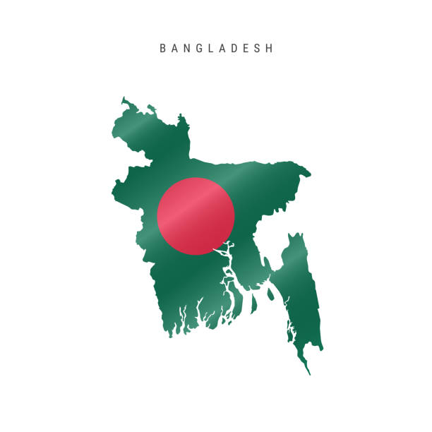

Here we will know about Bangladesh and some famous tourist places of bangladesh
Cox's Bazar
Cox’s Bazar is a town on the southeast coast of Bangladesh. It’s known for its very long, sandy beachfront, stretching from Sea Beach in the north to Kolatoli Beach in the south. Aggameda Khyang monastery is home to bronze statues and centuries-old Buddhist manuscripts. South of town, the tropical rainforest of Himchari National Park has waterfalls and many birds. North, sea turtles breed on nearby Sonadia Island. ― Google
About Bangladesh
Bangladesh, to the east of India on the Bay of Bengal, is a South Asian country marked by lush greenery and many waterways. Its Padma (Ganges), Meghna and Jamuna rivers create fertile plains, and travel by boat is common. On the southern coast, the Sundarbans, an enormous mangrove forest shared with Eastern India, is home to the royal Bengal tiger. ― Google

Somapura Mahavihara
Somapura Mahavihara or Paharpur Buddhist Vihara in Paharpur, Badalgachhi, Naogaon, Bangladesh is among the best known Buddhist viharas or monasteries in the Indian Subcontinent and is one of the most important archaeological sites in the country. It was designated as a UNESCO World Heritage Site in 1985.The earliest form of the Bengali language began to the emerge during the eighth century.